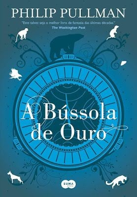
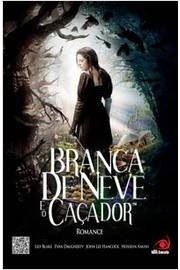

Fantasia é um gênero da ficção em que se usa geralmente fenômenos sobrenaturais, mágicos e outros como um elemento primário do enredo, tema ou configuração. Muitas obras dentro do gênero ocorrem em mundos imaginários onde há criaturas mágicas e itens mágicos.
Precisando sair da rotina, mergulhar com força em outros universos, fugir da realidade sufocante, enfim, de uma boa dose de escapismo? Os melhores livros de fantasia de todos os tempos, sem dúvida, são o que você precisa.
O céu é o limite na fantasia. Os limites que a realidade nos impõe não existem ou simplesmente são subvertidos para proporcionar a melhor jornada possível em termos narrativos.
Com batalhas épicas, aventuras inesquecíveis, desafios assombrosos e emocionantes, esse gênero é um verdadeiro deleite para quem gosta de dar asas à imaginação e viver grandes emoções.
Se está com vontade de embarcar em novos e ricos universos, não pode perder essa lista de melhores livros de fantasia. Confira!

- Harry Potter e a pedra filosofal- J.K.Rowling (+10)
Harry Potter é um garoto órfão que vive infeliz com seus tios, os Dursleys. Ele recebe uma carta contendo um convite para ingressar em Hogwarts, uma famosa escola especializada em formar jovens bruxos.Inicialmente, Harry é impedido de ler a carta por seu tio, mas logo recebe a visita de Hagrid, o guarda-caça de Hogwarts, que chega para levá-lo até a escola. Harry adentra um mundo mágico que jamais imaginara, vivendo diversas aventuras com seus novos amigos, Rony Weasley e Hermione Granger.
Ver mais

- Corte de espinhos e rosas - Sarah J. Maas (+16)
Num mundo dividido, uma muralha mágica separa duas espécies. De um lado, os feéricos vivem dentro de suas fronteiras cheias de beleza e mistério; do outro, os humanos possuem apenas medo, desconfiança e dificuldades.Feyre, filha de um casal de mercadores humanos e falidos, se torna caçadora para sustentar a família.

- As crônicas de Nárnia- O leão, a feiticeira e o guarda roupa - C. S. Lewis (+10)
Durante os bombardeios da Segunda Guerra Mundial de Londres, quatro irmãos ingleses são enviados para uma casa de campo onde eles estarão seguros. Um dia, Lucy encontra um guarda-roupa que a transporta para um mundo mágico chamado Nárnia.Depois de voltar, ela logo volta à Nárnia com seus irmãos, Peter e Edmund, e sua irmã, Susan. Lá eles se juntam ao leão mágico, Aslan, na luta contra a Feiticeira Branca
Ver mais

- A bússula de ouro - Philip Pullman (+12)
A órfã Lyra Belacqua vive em um mundo paralelo onde as almas dos humanos se manifestam na forma animal, e são chamadas de daemons. Ela descobre que diversas crianças estão desaparecendo, entre elas seu melhor amigo Roger, então vai com Pantalaimon, seu daemon, em busca de respostas.Com a ajuda de um instrumento ancestral e amigos que faz no caminho, Lyra parte em uma jornada que pode mudar o mundo para sempre.
Ver mais

- Branca de neve e o caçador - Evan Daugherty (+12)
Branca de Neve é a única pessoa na terra mais bonita do que a rainha má, a qual está decidida a destruí-la. Porém o que a malvada tirana nunca imaginou é que a jovem que ameaça seu reinado vem treinando a arte da guerra com o caçador, que foi enviado para matá-la.O príncipe está há muito tempo encantado pela beleza e pelo poder da Branca de Neve.
Ver mais